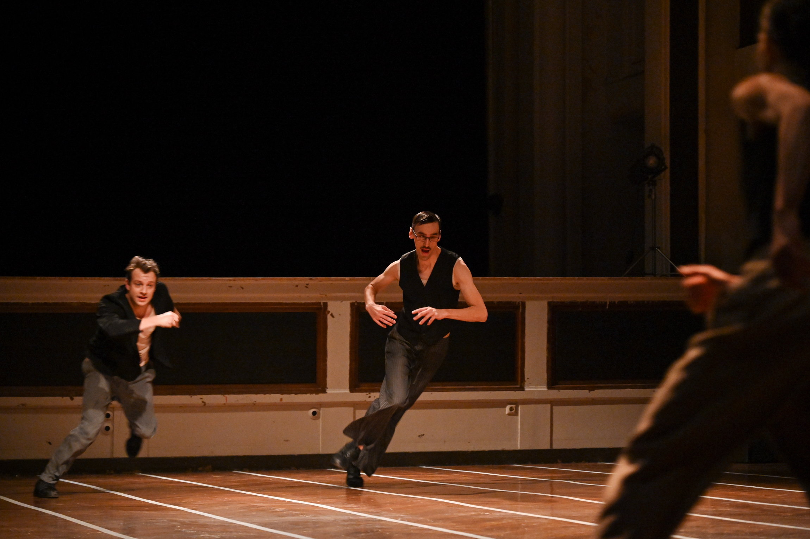
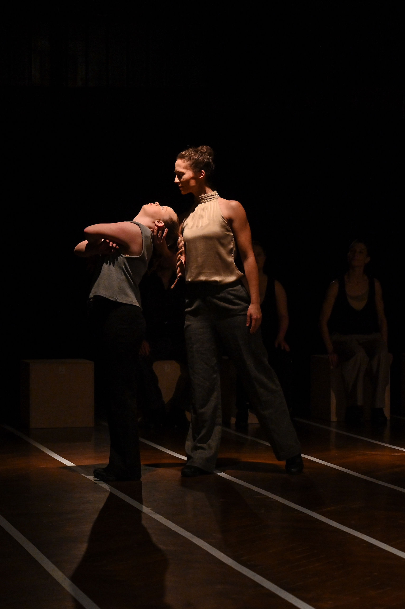
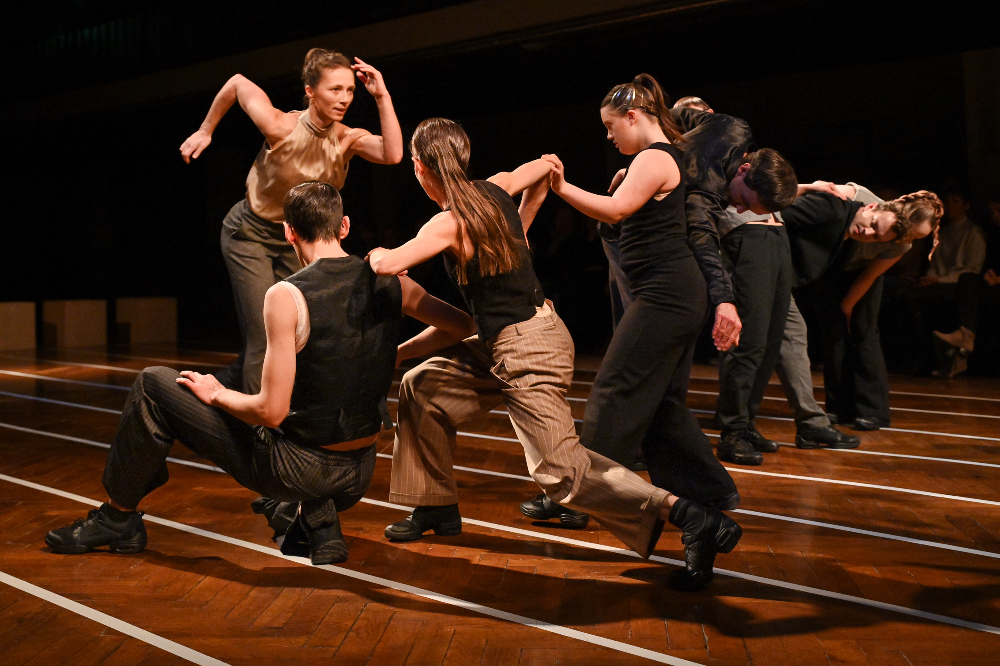
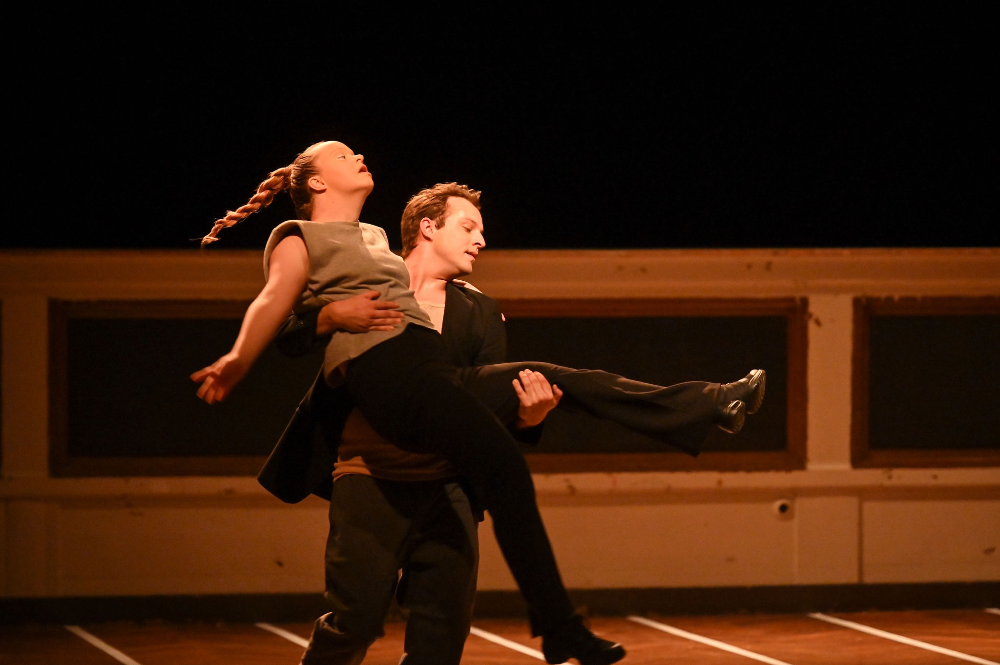
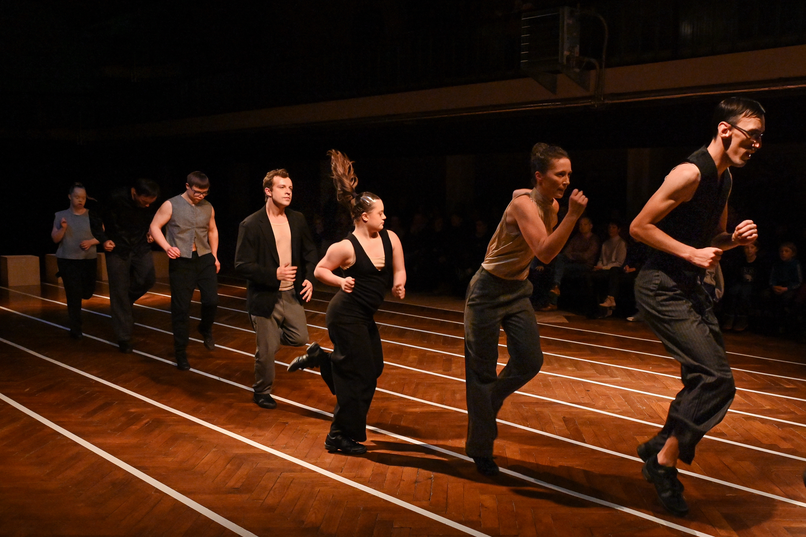
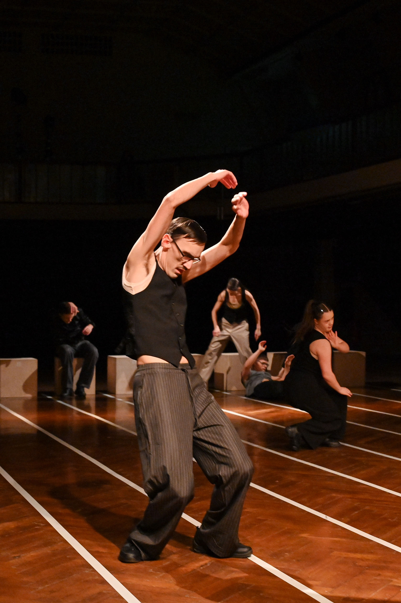
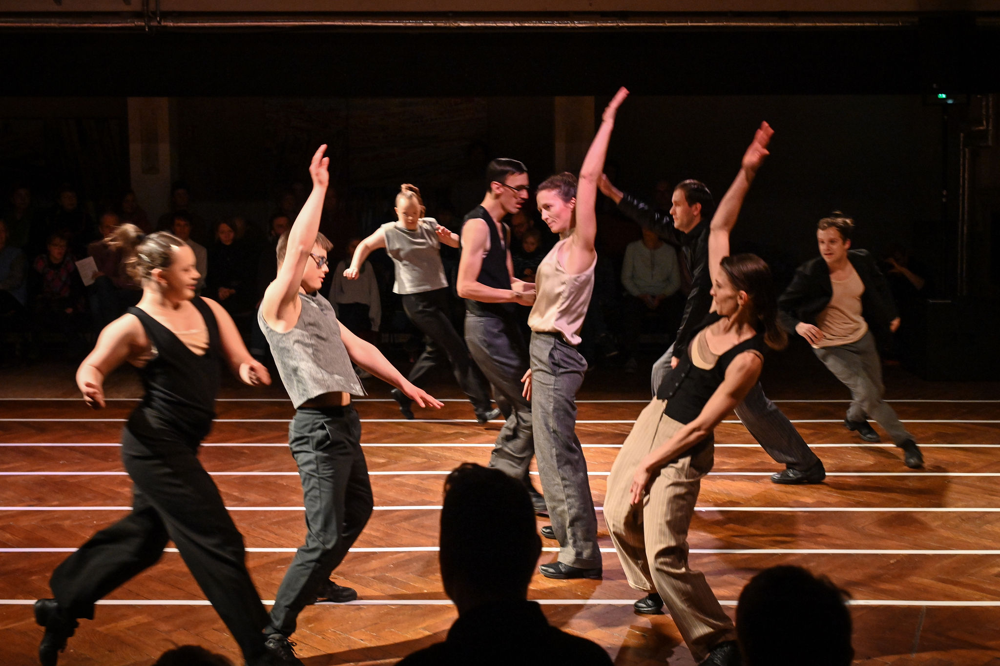
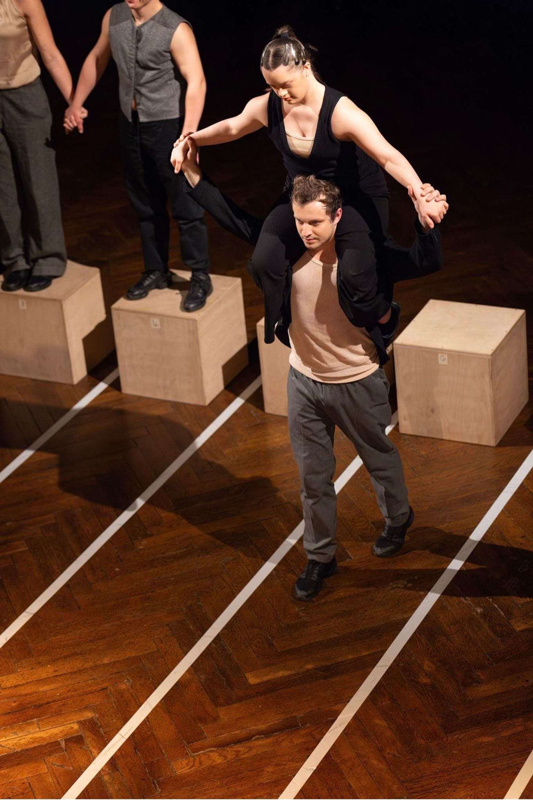
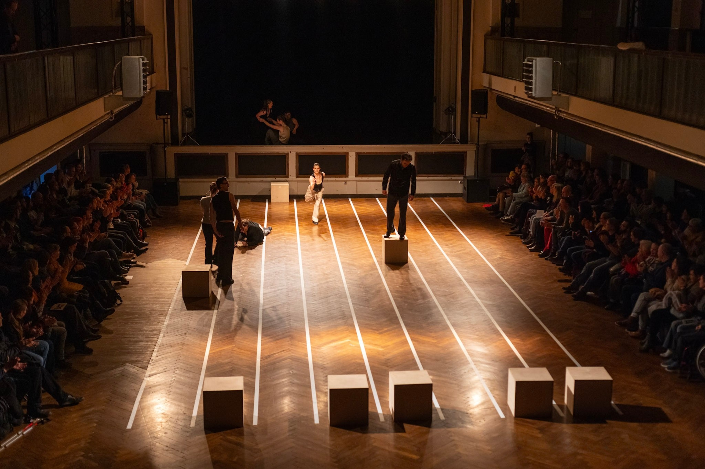

Tanzstück
Wenn ich jetzt stehen bleibe…
Zentralwerk, Dresden 2025
Seit dem Jahr 2023 baut farbwerk gemeinsam mit der Choreografin Nora Schott ein eigenes Tanzensemble auf. Aus regelmäßigen Trainings und ersten tänzerischen Miniaturen entstand schließlich farbwerks erste abendfüllende Tanzproduktion – inspiriert von Tolstois Erzählung „Wieviel Erde braucht der Mensch“: Wir machen uns auf den Weg. Immer weiter, immer voran. Wir bewegen uns. Wir bewegen Dinge. Wir bewegen Körper. Wir bewegen andere Menschen. Wir versuchen, Ziele zu erreichen. Wir gewinnen. Wir verlieren. Unsere Gedanken und Gefühle treiben uns an. Stoppen uns. Bringen uns vom Weg ab. Werfen uns aus der Bahn. Welche Bahn?
- 
- 
- 
- 
- 
- 
- 
- 
- 
×

❮
❯
Mit
Leon Damm, Antje Grüner, David Köhler, Luise Scholz, Emily Stübing, Durim Veliu, Luienne Westhus, Conrad WiemerFranziska Kusebauch, Antje Grüner
Choreografie
Nora Schott
Idee und Konzept
Jacqueline Hamann
Musik
Arne Müller
Mitarbeit Tanz
Franziska Kusebauch, Antje Grüner
Ausstattung
Jacqueline Hamann, Hanna Zeyer
Assistenz
Anna Kröger
Bühnenbau
Stefan Pietschmann
Maske
Heike Neubauer-Antoci, Marina Wenner
Produktionsleitung
Jeannette Scholz